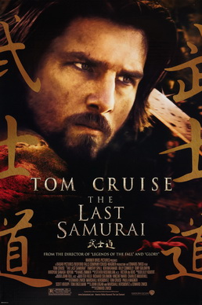
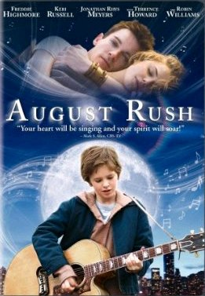
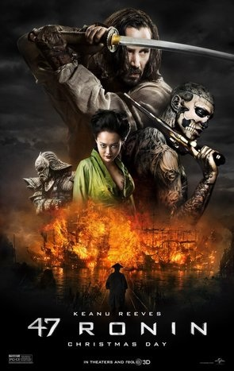

The Last Samurai

Genre: Action, Drama, History
Release date: 15 February 2004
Brief Summary:
An American military advisor embraces the Samurai culture he was hired to destroy after he is captured in battle.
August rush

Genre: Drama, Music
Release date: 21 November 2007 (USA)
Brief Summary:
A infant secretly given away by Lyla's father has grown into an unusually gifted child who hears music all around nhim and can turn the rustling of wind through a wheat field into a beautiful symphony with himself at its center, the composer and conductor. He holds an unwavering belief that his parents are alive and want him as much as he wants them. Determined to search for them, he makes his way to New York City. There, lost and alone, he is beckoned by the guitar music of a street kid playing for change and follows him back to a makeshift shelter in the abandoned Fillmore East Theater, where dozens of children...
47 Ronin

Genre: Action, Adventure, Drama
Release date: 2 January 2014
Brief Summary:
A band of samurai set out to avenge the death and dishonor of their master at the hands of a ruthless shogun.
Harry Potter and Half-blood prince

Genre: Adventure, Family, Fantasy
Release date: 16 July 2009
Brief Summary:
As Harry Potter begins his sixth year at Hogwarts, he discovers an old book marked as "the property of the Half-Blood Prince" and begins to learn more about Lord Voldemort's dark past.